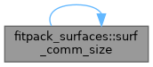
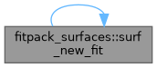
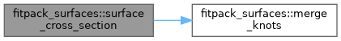
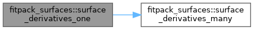
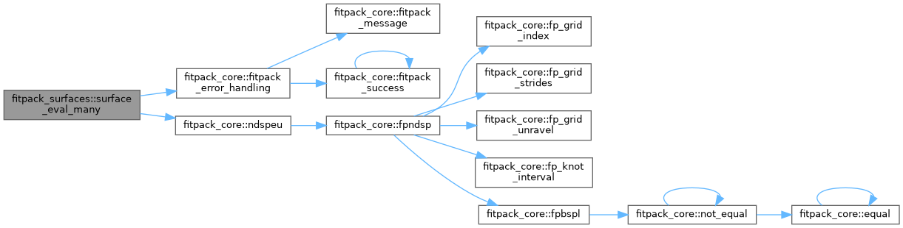
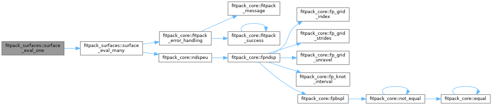
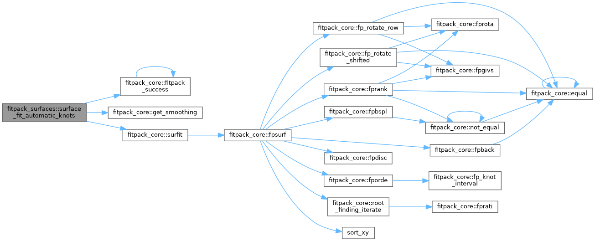
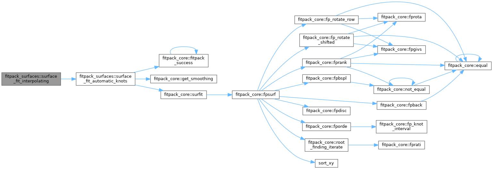
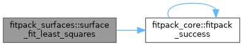
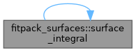

- Generated by
 1.13.2
1.13.2
|
fitpack
Modern Fortran library for curve and surface fitting with splines
|
OOP wrapper for bivariate surface fitting to scattered data. More...
Data Types | |
| interface | fitpack_surface |
| Bivariate surface fitter \( z = s(x, y) \) for scattered data. More... | |
Functions/Subroutines | |
| integer(fp_flag) function | surface_fit_automatic_knots (this, smoothing, order, keep_knots) |
| Fit a smoothing surface with automatic knot placement. | |
| integer(fp_flag) function | surface_fit_interpolating (this, reset_knots) |
| Fit an interpolating surface ( \( s = 0 \)) through the data points. | |
| integer(fp_flag) function | surface_fit_least_squares (this, smoothing, reset_knots) |
| Fit a least-squares surface with fixed knots. | |
| real(fp_real) function, dimension(size(x)) | surface_eval_many (this, x, y, ierr) |
| Evaluate the surface at a list of scattered \( (x_i, y_i) \) points. | |
| real(fp_real) function | surface_eval_one (this, x, y, ierr) |
| Evaluate the surface at a single \( (x, y) \) point. | |
| real(fp_real) function, dimension(size(y), size(x)) | surface_eval_gridded (this, x, y, ierr) |
| Evaluate the surface on a rectangular grid \( x_i \times y_j \). | |
| elemental subroutine | surf_destroy (this) |
| Destroy a surface object and release all allocated memory. | |
| subroutine | surf_new_points (this, x, y, z, w) |
| Load new scattered data points and allocate workspace for surface fitting. | |
| type(fitpack_surface) function | surf_new_from_points (x, y, z, w, ierr) |
| Construct a surface from scattered data points and perform a default fit. | |
| integer(fp_flag) function | surf_new_fit (this, x, y, z, w, smoothing, order) |
| Load new data points and perform a fresh surface fit. | |
| real(fp_real) function, dimension(size(y), size(x)) | surface_derivatives_gridded (this, x, y, dx, dy, ierr) |
| Evaluate partial derivatives on a rectangular grid. | |
| real(fp_real) function, dimension(size(x)) | surface_derivatives_many (this, x, y, dx, dy, ierr) |
| Evaluate partial derivatives at scattered \( (x_i, y_i) \) points. | |
| real(fp_real) function | surface_derivatives_one (this, x, y, dx, dy, ierr) |
| Evaluate a partial derivative at a single \( (x, y) \) point. | |
| real(fp_real) function | surface_integral (this, lower, upper) |
| Compute the double integral of the surface over a rectangular domain. | |
| type(fitpack_curve) function | surface_cross_section (this, u, along_y, ierr) |
| Extract a 1D cross-section curve from the surface. | |
| type(fitpack_surface) function | surface_derivative_spline (this, nux, nuy, ierr) |
| Compute the B-spline representation of a partial derivative surface. | |
| pure real(fp_real) function, dimension(n) | merge_knots (along_y, tx, ty, n) |
| Select knots from the appropriate direction for cross-section extraction. | |
| elemental integer(fp_size) function | surf_comm_size (this) |
| Return the communication buffer size for the surface. | |
| pure subroutine | surf_comm_pack (this, buffer) |
| Pack surface data into a communication buffer. | |
| pure subroutine | surf_comm_expand (this, buffer) |
| Expand surface data from a communication buffer. | |
OOP wrapper for bivariate surface fitting to scattered data.
Provides fitpack_surface, a derived type for fitting tensor-product B-spline surfaces \( z = s(x, y) \) to scattered \( (x_i, y_i, z_i) \) data. The underlying core routine is surfit, which uses automatic knot placement with a smoothing parameter. Supports evaluation, partial derivatives, integration, and cross-section extraction.
|
private |
Select knots from the appropriate direction for cross-section extraction.
|
private |
Expand surface data from a communication buffer.
|
private |
Pack surface data into a communication buffer.
|
private |
Return the communication buffer size for the surface.

|
private |
Destroy a surface object and release all allocated memory.
|
private |
Load new data points and perform a fresh surface fit.

|
private |
Construct a surface from scattered data points and perform a default fit.
| [in] | x | X coordinates. |
| [in] | y | Y coordinates, same size as x. |
| [in] | z | Function values, same size as x. |
| [in] | w | Optional weights. |
| [out] | ierr | Optional error flag. |
|
private |
Load new scattered data points and allocate workspace for surface fitting.
| [in,out] | this | The surface object (destroyed and reinitialized). |
| [in] | x | X coordinates of scattered data points. |
| [in] | y | Y coordinates, same size as x. |
| [in] | z | Function values, same size as x. |
| [in] | w | Optional positive weights, same size as x. |
|
private |
Extract a 1D cross-section curve from the surface.
If along_y=.true., returns \( f(y) = s(u, y) \); otherwise \( g(x) = s(x, u) \). The result is a fitpack_curve with the appropriate knots and coefficients.

|
private |
Compute the B-spline representation of a partial derivative surface.
Returns a new surface representing \( \partial^{n_x+n_y} s / \partial x^{n_x} \partial y^{n_y} \), with reduced degrees \( (k_x - n_x, k_y - n_y) \) and trimmed knots.
|
private |
Evaluate partial derivatives on a rectangular grid.
Returns f(j,i) = \( \partial^{dx+dy} s / \partial x^{dx} \partial y^{dy} \) at \( (x_i, y_j) \).
|
private |
Evaluate partial derivatives at scattered \( (x_i, y_i) \) points.
|
private |
Evaluate a partial derivative at a single \( (x, y) \) point.

|
private |
Evaluate the surface on a rectangular grid \( x_i \times y_j \).
Returns f(j,i) = \( s(x_i, y_j) \).
|
private |
Evaluate the surface at a list of scattered \( (x_i, y_i) \) points.

|
private |
Evaluate the surface at a single \( (x, y) \) point.

|
private |
Fit a smoothing surface with automatic knot placement.
Uses the surfit core routine. The smoothing parameter controls the trade-off between closeness of fit and smoothness.
| [in,out] | this | The surface object. |
| [in] | smoothing | Optional smoothing factor. |
| [in] | order | Optional spline degree (applied to both directions). |
| [in] | keep_knots | If .true., continue from current knot set. |
Ensure we start with new knots (unless caller wants to keep them)

|
private |
Fit an interpolating surface ( \( s = 0 \)) through the data points.

|
private |
Fit a least-squares surface with fixed knots.

|
private |
Compute the double integral of the surface over a rectangular domain.
Computes \( \int_{x_a}^{x_b} \int_{y_a}^{y_b} s(x,y)\,dy\,dx \).
| [in] | this | The fitted surface. |
| [in] | lower | Lower bounds \( (x_a, y_a) \). |
| [in] | upper | Upper bounds \( (x_b, y_b) \). |
